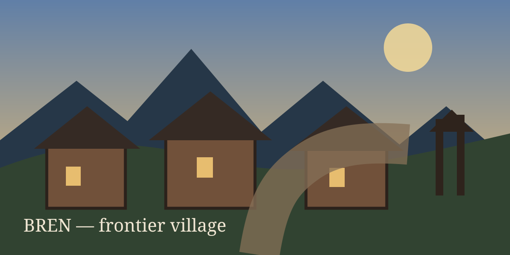
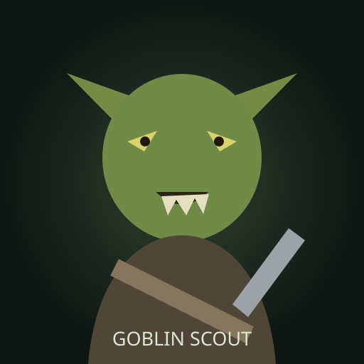

Another World
AI Isekai RPG · Prototype v0.3.1
저장
불러오기

새로운 삶을 시작합니다
이 세계는 당신이 주인공이라는 사실을 모릅니다.
이름
초기 성향
마력감응
검술경험
사냥경험
도적감각
이세계로 들어간다
전투

적 HP
거리
무기 공격
마법
거리 벌리기
접근
방어
전술 스킬
도망
마법 연구
속성·형태·변형을 조합해 자신만의 주문을 만든다.
형태
탄환
장벽
영역
변형
없음
압축
추적
연쇄
연구한다
닫기